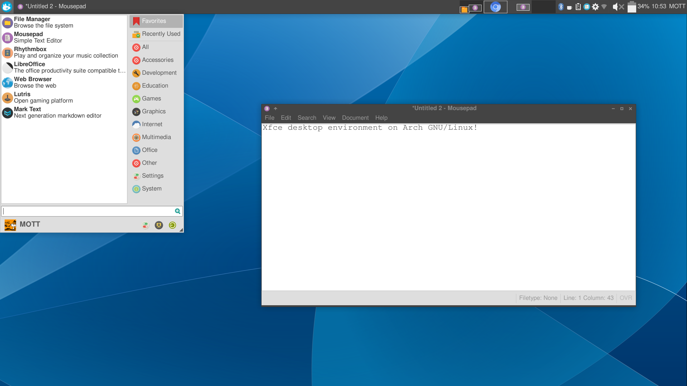

Richard Stallman has a part of his main website which has a list of links of "What's bad about:", where he lists the problems of many companies such as Google, Netflix, Amazon, Skype, and more. This part of my website lists what's good about different companies, services, software, and more. Think optimistically for a change.
So let's see what's good about...
GNU/Linux is an operating system which uses a combination of the GNU operating system and Linux, the kernel. It is a powerful tool, and can be entirely free software.
Besides being free software (which by far is the biggest benefit of using it), GNU/Linux is a powerful operating system which can be used for a variety of purposes and made to work in many different ways. For example, you can decide which distribution you want to use, and it may include a different package manager. That freedom is very useful when it comes to operating systems. I can have an OS which is set up for doing programming work, and you can have one set up for gaming.
But that's not the half of it. GNU/Linux is generally very stable than other operating systems, and you can depend on it
Updates! This is a huge one that you should be able to take for granted. Updates on GNU/Linux generally consist of telling your package manager to find updates from your distribution's repos and install them. That's it! Restarting is optional, but updates are actually installed before you restart, so your next restart won't take forever like a certain other operating system we all know and hate.
Packages on GNU/Linux are generally installed from a single source which is maintained by the maintainers of your distribution. For example, when you use Debian, you install software from the Debian repositories, and they are responsible for keeping those packages up to date. That way every program does not have to have its own updater system which installs updates for itself -- that can be a mess.
Like I said, the greatest part about GNU/Linux (and everything else listed in the "What's Good About..." list is that it is free (as in libre, not gratis) software. It is impossible to fully appreciate the value of GNU/Linux until you understand the value of free software.
I recommend Parabola as a good distribution in general. It is not the best for beginners though. For them Trisquel is the best in my opinion.
Here is a screenshot of my computer's operating system. I use a configured Xfce desktop environment on the Arch GNU/Linux distribution, but other people's setup will likely look completely different.
Matrix is a protocol for chat services. You sign up on a Matrix homeserver, and use it with a Matrix client. This enables you to communicate with anyone else signed up on any other Matrix homeserver. For example, if I use matrix.org, I can still talk with you if you use the chat.privacytools.io homeserver, and anyone can set up their own homeserver for anyone to join as well.
Riot is a Matrix client, it allows you to login with your credentials to your Matrix homserver. In short, this piece is what lets you send messages to someone else. It's the actual app you install on your device, or the website you visit to use Matrix. Riot is only one client, there's also nheko, Fractal, and many more.
The best parts about Matrix/Riot include:
Searx is a search engine which pulls from many different other search engines, including Google. It is entirely free software, so anyone can set up their own search engine to use. There are many websites set up with the this search engine, including searx.me.
This search engine is by far my favorite in general, because anyone can set up their own version of it, and because you do not have to depend on one website for your search results because it gets the results from many different sources.
I2P is an anonymous network which consists of over 50,000 computers worldwide.
Free Software is not a particular program, service, or company, but it is a very important element of all the other items which are listed on this page. Free software, simply put, is software which gives you the freedom to change how the program works, as well as to give copies of the program to others to use. Some people call this software "open source", but the better term is "Free Software" because of the many misunderstanding of what "open source" really is.
"Free Software" does not refer to the price to use the software, or the price to obtain a copy. "Free" in this sense solely refers to freedom rather than price. Think "free speech". To make this clear, sometimes the phrase "libre software" is used, to make it clear that they are not referring to "gratis software".
A computer program must give every user of the software these four freedoms for it to be free software:
Note: "freeware" and "shareware" do not refer to Free Software at all. They are different programs which to not give users the necessary freedoms.